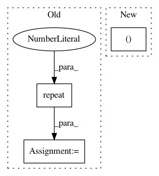

0b0eabbfd972c9e3f6323bff9d39ac5fc3ba9cc7,transformer/Translator.py,Translator,translate_batch,#Translator#,52
Before Change
src_seq.data.repeat(1, beam_size).view(
src_seq.size(0) * beam_size, src_seq.size(1)))
enc_output = Variable(
enc_output.data.repeat(1, beam_size, 1).view(
enc_output.size(0) * beam_size, enc_output.size(1), enc_output.size(2)))
//--- Prepare beams
beams = [Beam(beam_size, self.opt.cuda) for _ in range(batch_size)]
beam_inst_idx_map = {
After Change
sz_b, len_s = src_seq.size()
src_seq = src_seq.repeat(1, sz_beam).view(sz_b * sz_beam, len_s)
sz_b, len_s, d_h = enc_output.size()
enc_output = enc_output.repeat(1, sz_beam, 1).view( sz_b * sz_beam, len_s, d_h)
//--- Prepare beams
In pattern: SUPERPATTERN
Frequency: 4
Non-data size: 3
Instances
Project Name: jadore801120/attention-is-all-you-need-pytorch
Commit Name: 0b0eabbfd972c9e3f6323bff9d39ac5fc3ba9cc7
Time: 2018-08-23
Author: yhhuang@nlg.csie.ntu.edu.tw
File Name: transformer/Translator.py
Class Name: Translator
Method Name: translate_batch
Project Name: Kaixhin/Rainbow
Commit Name: a4df4a6f648053e4ad05bbcfc06a87c6fa984e53
Time: 2018-02-15
Author: kaia@fb.com
File Name: model.py
Class Name: DQN
Method Name: forward
Project Name: eriklindernoren/PyTorch-GAN
Commit Name: fc9e5824ad7bd3094f5012dc6fc3d2348481a2f4
Time: 2019-04-02
Author: eriklindernoren@live.se
File Name: implementations/bicyclegan/bicyclegan.py
Class Name:
Method Name: sample_images
Project Name: utkuozbulak/pytorch-cnn-visualizations
Commit Name: 697e7fa4f4a6e45566843adc24b126165b817ac0
Time: 2019-05-03
Author: utku.ozbulak@gmail.com
File Name: src/misc_functions.py
Class Name:
Method Name: save_image